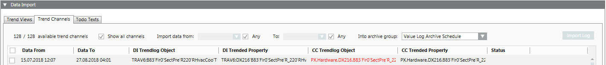
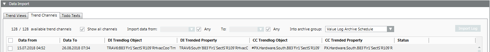
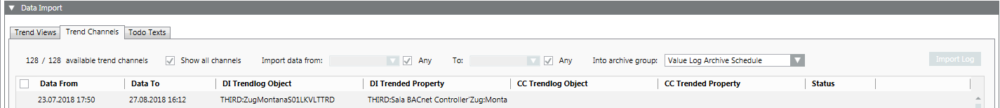

Resolve Inconsistencies during Assignment
The following are procedures for resolving inconsistencies to assignments.
Trend log Object is False

- In the Data import expander, select the Trend channels tab.
- Enter the following migration information:
a. Select one or more trend channels and select the check box.
b. In the Data from field, enter the start date.
c. In the Data To field, enter the end data.
d. In the In archive group drop-down list, select the archive group. By default the data in the archive group Value Log Archive Schedule is imported. - Perform an import.
- The data is saved to an offline trend log object after import.
- Double-click the data point in the CC Trended Property column.
- The data point is selected in System Browser.
- Select the Related items tab and then Trend.
- Click the corresponding trend label.
- The trend data is displayed in the secondary pane.
Check is Not Possible

Cause: In Desigo Insight, two or more data points were assigned to the same trend log object while trending.
- In the Data import expander, select the Trend channels tab.
- Enter the following migration information:
a. Select one or more trend channels and select the check box.
b. In the Data from field, enter the start date.
c. In the Data To field, enter the end date.
d. In the In archive group drop-down list, select the archive group. By default, the data in the archive group Value Log Archive Schedule is imported. - Perform an import.
- The data is saved to the database after import.
Continued Trending of Data
- Double-click the data point in the CC Trended Property column.
- The data point is selected in System Browser.
- Select the Object Configurator tab.
- In the Properties expander, select the Property column.
- Select the Property and select the VL check box.
- Click Save
 .
.
- All data continues to be recorded.
No Assignments Available

Cause:
There is no corresponding data point in Desigo CC. The data point may have been renamed in advance in Desigo CC.
Error correction:
The altered Desigo CC data point must be manually supplemented if Desigo Insight data is required.
- In System Browser, select logical view.
- Select the Manual Navigation check box.
- Select the appropriate data point.
- Drag the data point to the CC Trended Property column for the corresponding entry.
Note: Assignments are lost when changing applications and must be reassigned. - Select the check box.
- Perform an import.
- The data is saved to the database after performing the import. The data is no longer automatically recorded. Select the property values log for the data if data still must be recorded.
Continued Trending of Data
- Select the Manual Navigation check box.
- Double-click the data point in the CC Trended Property column.
- The data point is selected in System Browser.
- Select the Object Configurator tab.
- In the Properties expander, select the Property column.
- Select the Property and select the VL check box.
- Click Save .
- All data continues to be recorded.